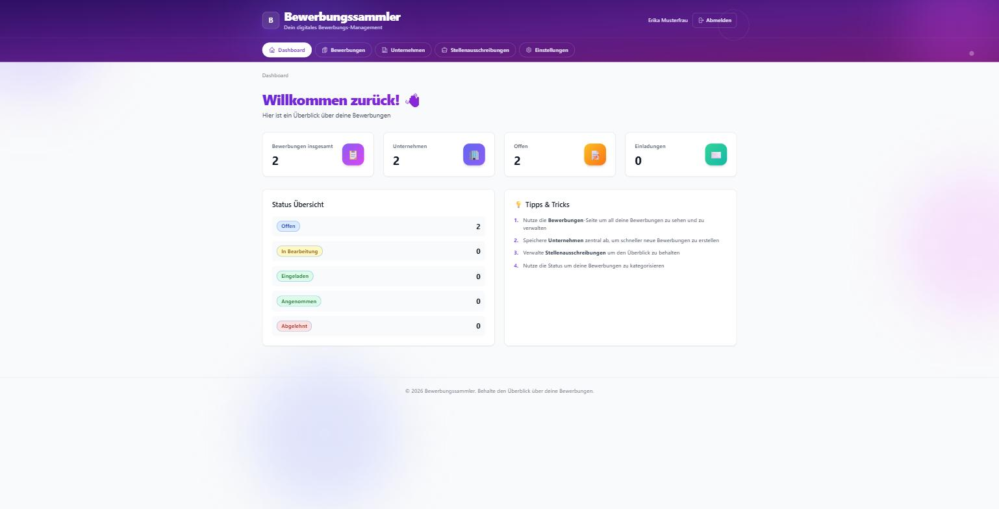
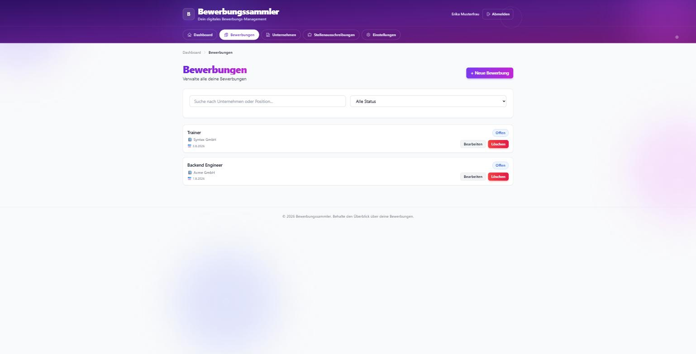
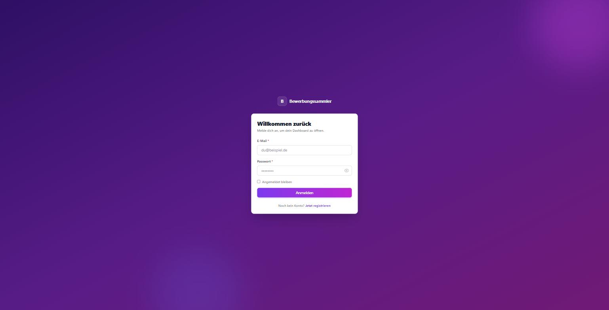
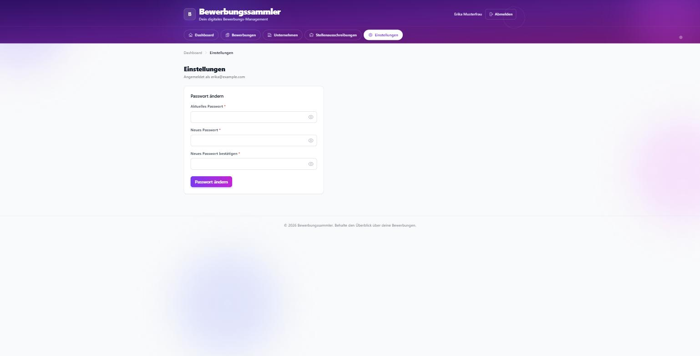
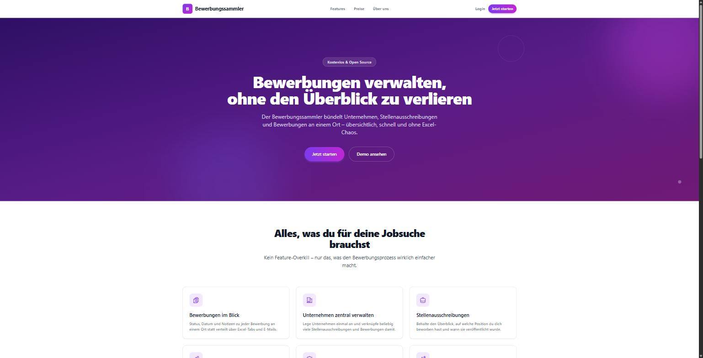
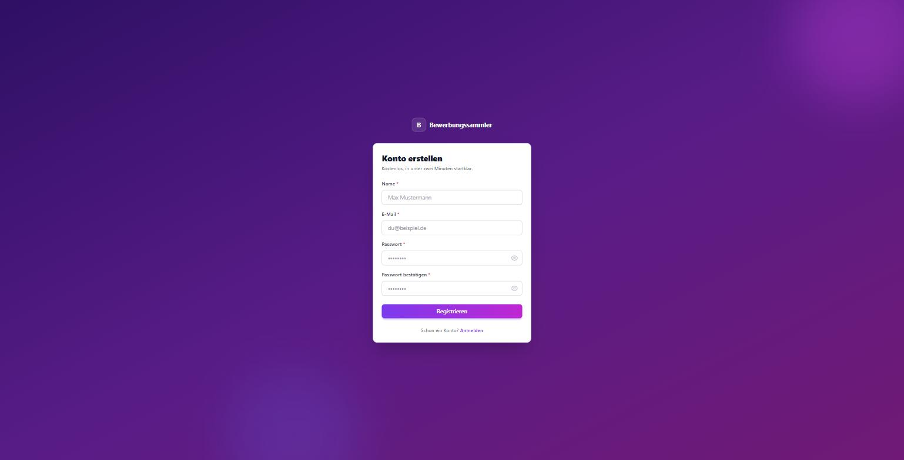

Bewerbungen, Unternehmen & Stellenausschreibungen an einem Ort
Agenda
Problem, Architektur, Tech-Stack
Datenbank, Features, Live-Demo
Code-Highlights, Herausforderungen
Ergebnisse, Ausblick, Fragen
Einführung
Ziel der Projektphase: Lauffähiges MVP
Architektur
Produktion: gleiche Struktur — CloudFront + S3 · App Runner · RDS · Lambda/EventBridge/SES für die tägliche Automation (alles Terraform-verwaltet)
Tech-Stack
Schneller Dev-Server mit Hot-Reload, kein Build-Warten während der Entwicklung.
Automatische OpenAPI-Doku unter /docs, async-fähig, wenig Boilerplate.
Postgres in Docker = identisch zur Produktions-DB; SQLite lokal ganz ohne Setup.
Lokale Entwicklung reproduzierbar, AWS-Infrastruktur als Code
Eigene docker start/stop/restart/install-Commands fürs Onboarding.
Tägliche Automation ganz ohne eigenen Server; läuft nur, wenn sie wirklich etwas zu tun hat.
Datenbankstruktur
Funktionalitäten


Funktionalitäten


+ Backend Tägliche Automation (Lambda) prüft überfällige Bewerbungen und verschickt einen Mail-Report — läuft unsichtbar, kein eigener Screenshot dafür
Live-Demo
↓ Fallback-Screenshots, falls die Live-Demo ausfällt
Fallback


Implementierung
JWT-Access-Token + rotierender Refresh-Token, beide in HttpOnly-Cookies.
Migrationen laufen automatisch beim Start — auch auf bereits bestehenden Datenbanken.
Lambda + EventBridge + SES: täglicher Check überfälliger Bewerbungen, Report per Mail.
↓ Details je ein Code-Ausschnitt
Highlight 1 / 3
# Backend/routers/auth.py
password_hash = user.password_hash if user else DUMMY_PASSWORD_HASH
password_valid = PasswordService.verify_password(payload.password, password_hash)
if not user or not password_valid:
raise HTTPException(status_code=401, detail=GENERIC_LOGIN_ERROR)
Hash-Vergleich läuft immer — auch wenn die E-Mail gar nicht existiert. Verhindert, dass Angreifer per Antwortzeit registrierte E-Mails erraten (“User-Enumeration”).
Highlight 2 / 3
# Backend/database.py
if current_revision is None and already_has_tables:
command.stamp(alembic_cfg, "0001_baseline")
command.upgrade(alembic_cfg, "head")
Alembic kam nachträglich dazu. Erkennt automatisch: "Tabellen existieren schon, aber ohne Migrations-Historie" → markiert den Ausgangszustand, statt ihn erneut anzulegen.
Highlight 3 / 3
# terraform/eventbridge.tf
resource "aws_cloudwatch_event_rule" "daily_automation" {
schedule_expression = "cron(0 8 * * ? *)"
}
EventBridge triggert täglich um 8:00 UTC die Lambda (Backend/automation/) — die prüft alle offenen Bewerbungen (OPEN > 7 Tage, IN_PROGRESS > 14 Tage) und verschickt einen HTML-Report per SES. Kein eigener Server läuft dafür durchgehend.
Herausforderungen
Kein Migrationstool, aber Schema musste sich rückwirkend ändern.
Alembic eingeführt, inkl. automatischer Erkennung bestehender Datenbanken.
Login könnte verraten, welche E-Mails registriert sind.
Generische Fehlermeldung + Dummy-Hash-Vergleich, timing-sicher.
PowerShell-Skript brach mit kryptischer Fehlermeldung ab.
Ursache gefunden (Fehlerbehandlung), saubere Meldung + Exit-Code.
Retrospektive
Ergebnisse
API-Endpunkte
automatisierte Tests grün
Frontend-Seiten
Terraform-Dateien
Ausblick
Übergang
Was würdet ihr anders machen? Was fehlt euch noch?
github.com/ChrissieChrossie/Bewerbungssammler